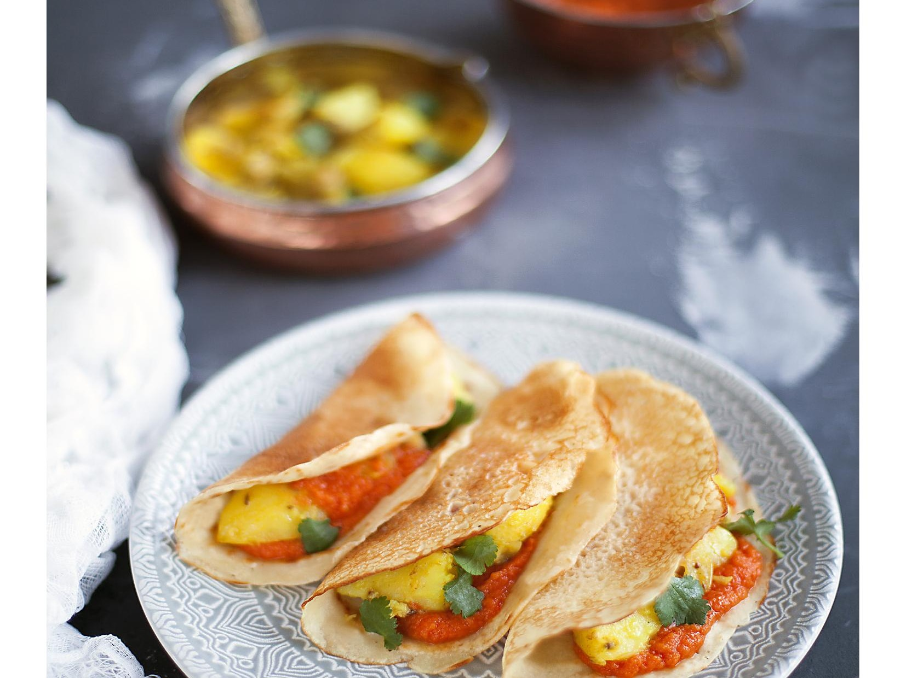

Доса – это тонкие хрустящие блинчики из ферментированного теста на основе риса и бобовых, популярные в Южной Индии, Малайзии и Сингапуре. Тесто для этих блинчиков обязательно выбраживают, потому что в нем нет ни глютена, ни яиц – если печь досы сразу, они будут очень ломкими, а благодаря ферментации тесто становится воздушным и более податливым.